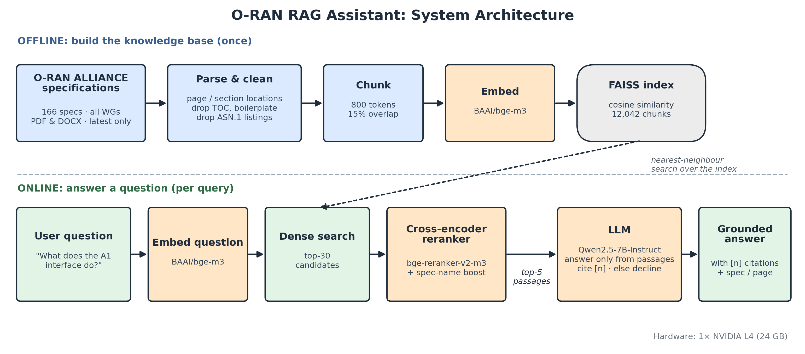

General-purpose LLMs know little about O-RAN: asked what the A1 interface does, Qwen2.5-7B said it connects the Radio Unit and the Distributed Unit. This assistant retrieves passages from 166 O-RAN ALLIANCE specifications, answers only from them, cites every claim, and declines when the documents do not cover the question.
Two phases. Offline, the specifications are cleaned, chunked and embedded once. Online, each question is embedded, matched against the index, reranked, and answered from the top five passages. Click any stage for details.

ORANBench is the exact 1,500-question set (500 easy, 500 medium, 500 hard) published by the ORANSight-2.0 authors, so the rows below are evaluated on identical questions. Published numbers are copied from ORANSight-2.0, Tables V and VI.
Random sample, 500 per level (seed 42). The corpus matters far more than model size.
25 questions per set, judged by Phi-4, manually reviewed.
| Set | Base | RAG | Cited |
|---|---|---|---|
| Original Qs, 8 docs | 26% | 96% | 100% |
| Original Qs, 29 docs | 28% | 96% | 100% |
| Diverse Qs, 29 docs | 18% | 90% | 92% |
Accuracy counts a partial answer as half. The base model hallucinated where RAG was right on 12/25 original and 15/25 diverse questions.
RAG minus no-RAG accuracy, with questions split into quarters by the reranker score of the top passage.
Is the option text present in the five passages the model saw? (Strict word-for-word check.)
| 104 | Neither option in the passages: retrieval missed the clause, or it is paraphrased |
| 44 | Both present: the model picked the wrong one of two close candidates |
| 19 | Only the correct option present: a pure reading error |
| 14 | Only the chosen wrong option present: a misleading passage |
Most errors are retrieval problems; better retrieval, not a bigger generator, is the next lever. Picks per option (474/496/319/211) track the gold distribution (464/516/328/192), so there is no position bias.
Task B1 queries run through the final system (166 specs, top-5 passages), next to the same model answering without retrieval.
All 1,500 official ORANBench questions with the 7B model's choice with and without retrieval, its confidence over the four options, and the five passages it was given (source and location).
All 180 download IDs used to build the corpus, grouped by working group. Each link opens the official O-RAN ALLIANCE download for that file (the specs are not redistributed here). 166 specifications were indexed; the remaining downloads are YANG model archives and errata that contain no indexable prose.
| Group | Specification | Version | Download |
|---|
Clone the repository and run download_specs.sh. It fetches all 180 files into docs_full/, unpacks archives, and can be re-run to resume. Downloading means accepting the O-RAN ALLIANCE terms of use.
What we chose and why.
Going from 29 documents to all 166 specifications raised benchmark accuracy by about 13 points, more than any other change. Only the newest version of each spec is indexed, so the retriever never has to choose between conflicting releases.
Tables of contents, licence boilerplate, change history and ASN.1 listings match almost any query and crowd out real content. Removing them, and keeping page (PDF) or section (DOCX) locations, makes citations checkable.
Spec clauses are long and cross-reference each other; 800 tokens usually keeps a definition together with its context, and the overlap avoids cutting a sentence in half at the boundary.
bge-m3 finds 30 candidates quickly; bge-reranker-v2-m3 reads question and passage together and keeps the best 5. A small boost for passages whose spec name matches the question helps with interface names like A1, E2 and O1.
The prompt tells the model to cite each claim as [n] and to say "The provided documents do not cover this." when the passages do not answer. That is how the assistant refuses the invented Z7 interface.
For benchmark questions we read the next-token probabilities of the option digits instead of parsing text. This removes formatting errors and gives a confidence for every option.
The ORAN-Bench-13K and ORANSight papers are excluded from the corpus, and no benchmark question is indexed.
Qwen2.5-32B without retrieval scores 0.763 on our sample; the 7B model with the right documents scores 0.872. We kept the 7B model, which fits on one L4 next to the retriever.